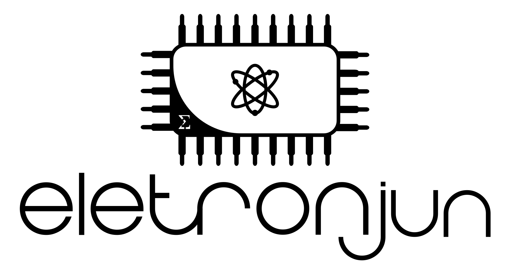

Sistema de Monitoramento de Temperatura e Umidade do ar
FCTE - EletronJun
Sensor aguardando
Última atualização:
--:--:--
Modo:
Desligado
Automático
Ligado
Temperatura
--
°C
Umidade relativa
--
%
Configuração do automático
Disponível no modo Ligado
Temperatura máxima
°C
°F
Salvar configuração
Entre no modo Ligado para ajustar os setpoints.
Notificações
Nenhuma notificação ainda